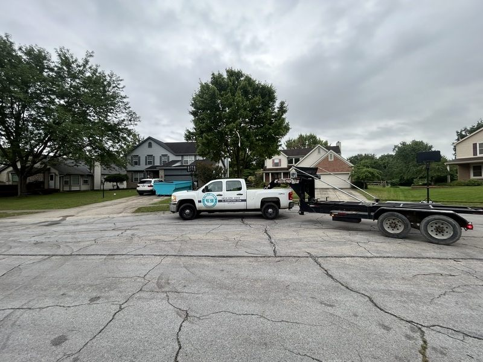

Ohio Dumpster Permit Guide: Dublin, Hilliard, Powell & More
Navigate dumpster permit requirements across Central Ohio with our city-by-city breakdown. Learn when you need a permit, how to apply, and what fees to expect in your community.

Understanding dumpster permit requirements can save you from fines, project delays, and headaches. Each Central Ohio municipality has its own regulations governing where and when you can place a dumpster. This comprehensive guide breaks down the permit requirements for Dublin, Hilliard, Powell, Upper Arlington, Worthington, Plain City, and Columbus.
Quick Answer
Most residential dumpster rentals in Central Ohio DON'T require a permit if the dumpster is placed entirely on private property. You typically only need a permit when placing a dumpster in the street or on public right-of-way. Read on for city-specific details.
When You Generally Need a Dumpster Permit in Ohio
Across most Central Ohio municipalities, dumpster permits are required when:
- The dumpster will be placed in a public street or alley
- The dumpster extends into the public right-of-way (including curbs and sidewalks)
- Your private property can't accommodate the dumpster
- The placement may obstruct traffic or pedestrian access
- Local regulations specifically require permits for certain neighborhoods or districts
When You Generally DON'T Need a Permit
You can skip the permit process if:
- The dumpster is placed entirely on your private property (driveway, yard)
- It doesn't obstruct sidewalks, streets, or public access
- It doesn't create safety or visibility hazards
- You have adequate clearance for delivery and pickup
Most Streamline Dumpsters customers place their 14-yard dumpsters in driveways and don't need permits. However, always check with your specific city to be certain.
City-by-City Permit Guide
Dublin, Ohio Dumpster Permit Requirements
Dublin is one of Central Ohio's fastest-growing cities, with well-defined regulations for dumpster placement.
When You Need a Permit in Dublin
- Dumpster placement in any public street or right-of-way
- Projects in Historic Dublin may have additional requirements
- Placement that impacts traffic flow or parking
Dublin Permit Application Process
- Contact the Dublin Division of Engineering: (614) 410-4600
- Provide project address and anticipated dumpster placement dates
- Submit application (available online or in person at 5200 Emerald Parkway)
- Pay permit fee (typically $50-100 for residential projects)
- Receive permit and display it visibly on or near the dumpster
Dublin-Specific Considerations
- Bridge Park residents: Contact your HOA as additional restrictions may apply
- Muirfield Village: Check homeowners association rules before ordering
- Historic Dublin: May require additional approvals for street placement
Processing Time: Typically 1-3 business days
Hilliard, Ohio Dumpster Permit Requirements
Hilliard maintains straightforward permit requirements for residential dumpster rentals.
When You Need a Permit in Hilliard
- Any dumpster placed in a public street
- Placement on city-maintained right-of-way
- If the dumpster obstructs sidewalks or bike paths
Hilliard Permit Application Process
- Contact Hilliard Service Department: (614) 334-2400
- Complete Right-of-Way Permit Application
- Specify exact placement location and duration
- Pay permit fee (approximately $50 for residential)
- Post permit visibly
Hilliard-Specific Considerations
- Old Hilliard historic district may have stricter placement rules
- Newer subdivisions often have HOA restrictions in addition to city requirements
- Ensure adequate clearance on narrow residential streets
Processing Time: 1-2 business days for standard residential permits
Powell, Ohio Dumpster Permit Requirements
Powell serves both Delaware and Franklin Counties, with unified permit requirements.
When You Need a Permit in Powell
- Street placement in residential or commercial areas
- Any obstruction of public right-of-way
- Projects near Liberty Street or downtown Powell
Powell Permit Application Process
- Contact Powell Community Development: (614) 885-5380
- Complete Obstruction Permit Application
- Provide proof of liability insurance (your dumpster rental company should provide this)
- Pay permit fee (varies by duration, typically $50-75)
- Display permit on dumpster
Powell-Specific Considerations
- Downtown Powell has stricter aesthetic and placement requirements
- Many Powell neighborhoods have active HOAs—check subdivision rules
- Sawmill Parkway area developments may have commercial permit requirements
Processing Time: 2-3 business days
Upper Arlington, Ohio Dumpster Permit Requirements
Upper Arlington is known for well-maintained residential neighborhoods with specific placement guidelines.
When You Need a Permit in Upper Arlington
- Dumpster placement in any public street or alley
- Projects in historic districts or tree-lined streets
- Any placement that may impact tree lawns or city-maintained landscaping
Upper Arlington Permit Application Process
- Contact Upper Arlington Service Department: (614) 583-5350
- Submit Right-of-Way Obstruction Permit Application
- Provide site plan showing proposed dumpster location
- Pay permit fee (approximately $60-100)
- Post permit conspicuously on dumpster
Upper Arlington-Specific Considerations
- Many UA streets have mature tree canopies—ensure adequate vertical clearance
- Older neighborhoods may have narrower driveways requiring street placement
- The city emphasizes protecting tree lawns and established landscaping
- Consider neighbors' concerns in closely-spaced residential areas
Processing Time: 2-3 business days
Worthington, Ohio Dumpster Permit Requirements
Worthington balances historic preservation with practical needs for home improvement projects.
When You Need a Permit in Worthington
- Street or right-of-way placement
- Projects in Old Worthington historic district
- Village Green area has additional aesthetic requirements
Worthington Permit Application Process
- Contact Worthington Service & Engineering: (614) 436-3100
- Complete Permit for Obstruction in Right-of-Way
- Specify rental duration and exact placement coordinates
- Pay permit fee (typically $50 for residential)
- Display permit on dumpster
Worthington-Specific Considerations
- Old Worthington: Additional architectural review board approval may be needed for large projects
- Village Green vicinity: Strict aesthetic and placement guidelines
- High Street corridor: Commercial permit requirements may apply
Processing Time: 1-3 business days
Plain City, Ohio Dumpster Permit Requirements
Plain City offers a more straightforward permit process typical of smaller municipalities.
When You Need a Permit in Plain City
- Placement in village streets or alleys
- Right-of-way obstructions
- Projects affecting Main Street or downtown area
Plain City Permit Application Process
- Contact Plain City Village Office: (614) 873-6363
- Submit basic permit application (often available same-day)
- Provide project details and rental duration
- Pay minimal permit fee (typically $25-50)
- Display permit
Plain City-Specific Considerations
- Smaller village streets may require specific placement plans
- Growing residential developments have varying HOA requirements
- Historic downtown area may have stricter guidelines
Processing Time: Often same-day for residential projects
Columbus, Ohio Dumpster Permit Requirements
For Columbus proper (including areas near Dublin, Hilliard, and other suburbs), permit requirements are standardized across the city.
When You Need a Permit in Columbus
- Dumpster placement in any public street
- Right-of-way obstructions including curbs and sidewalks
- Projects in high-traffic areas or commercial districts
Columbus Permit Application Process
- Contact Columbus Department of Public Service: (614) 645-3111
- Complete Temporary Obstruction Permit Application
- Provide certificate of insurance (Streamline Dumpsters provides this)
- Pay permit fee ($63 for residential, as of 2025)
- Post permit on dumpster
Columbus-Specific Considerations
- German Village, Victorian Village, and other historic districts have additional requirements
- Short North Arts District: Strict placement and aesthetic rules
- Neighborhoods near Ohio State: Higher traffic = stricter enforcement
Processing Time: 3-5 business days
How Streamline Dumpsters Helps with Permits
While we can't obtain permits on your behalf, Streamline Dumpsters provides valuable support:
- Expert guidance: We'll tell you whether your specific placement likely requires a permit
- Insurance documentation: We provide certificates of insurance needed for permit applications
- Placement advice: Our drivers assess your property to maximize private placement options
- City contacts: We can point you to the right department in your municipality
- Timing coordination: We'll adjust delivery schedules to accommodate your permit processing time
Contact us if you're unsure whether you need a permit—we're happy to discuss your specific situation.
Common Permit-Related Questions
What if I place a dumpster without a required permit?
Operating without a required permit can result in:
- Fines ranging from $50-$500 depending on the city
- Requirement to immediately remove the dumpster
- Delay in your project timeline
- Potential liability if the placement causes accidents or property damage
Can my dumpster rental company get the permit for me?
Most Ohio municipalities require the property owner or contractor to apply for permits. However, Streamline Dumpsters provides all necessary documentation and guidance to make the process easy.
How long do dumpster permits last?
Most Central Ohio cities issue permits valid for:
- 7-30 days for residential projects
- Renewals available for longer projects
- Specific to the dates you request in your application
Do I need a separate building permit and dumpster permit?
Yes, these are separate. Building permits authorize the construction work itself, while dumpster permits specifically allow placement in public right-of-way. You may need both for major renovation projects.
What if my HOA says no dumpsters?
Homeowners associations can impose restrictions beyond city requirements. If your HOA prohibits dumpsters:
- Request a temporary variance for your specific project
- Explore alternative placement on adjacent streets (with city permit)
- Consider junk removal services instead of dumpster rental
Best Practices for Permitted Dumpster Placement
If you do need a permit for street placement, follow these guidelines:
Safety First
- Ensure the dumpster doesn't obstruct driver visibility at intersections
- Keep fire hydrants accessible (typically 15-foot clearance required)
- Don't block driveways, mailboxes, or bus stops
- Place warning cones or reflective markers if required by your permit
Be Considerate
- Inform neighbors about the dumpster's arrival and pickup schedule
- Keep noise to a minimum during early mornings and late evenings
- Don't overfill the dumpster, creating hazards or unsightly messes
- Place the dumpster to minimize visual impact when possible
Permit Compliance
- Display your permit prominently on the dumpster or nearby
- Keep a copy of the permit with your project documents
- Ensure the dumpster is removed by the permit expiration date
- Apply for permit extension if your project runs longer than anticipated
Avoiding the Permit Process: Driveway Placement Tips
Most homeowners can avoid permits entirely by placing dumpsters on private property. Here's how to maximize your driveway space:
Measure Your Driveway
Our 14-yard dumpsters require approximately:
- Length: 14 feet
- Width: 7.5 feet
- Delivery access: 60 feet of approach clearance
- Overhead clearance: 23 feet (watch for power lines, tree branches)
Prepare the Placement Area
- Move vehicles out of the driveway
- Remove basketball hoops or other obstacles
- Trim overhanging branches if necessary
- Mark the desired placement spot with chalk or cones
Protect Your Driveway
- Request plywood boards under the dumpster (we provide these free)
- Avoid placing on decorative pavers or stamped concrete if possible
- Consider weight distribution on older driveways
Quick Reference: Central Ohio Permit Summary
| City | Contact Number | Typical Fee | Processing Time |
|---|---|---|---|
| Dublin | (614) 410-4600 | $50-100 | 1-3 days |
| Hilliard | (614) 334-2400 | ~$50 | 1-2 days |
| Powell | (614) 885-5380 | $50-75 | 2-3 days |
| Upper Arlington | (614) 583-5350 | $60-100 | 2-3 days |
| Worthington | (614) 436-3100 | ~$50 | 1-3 days |
| Plain City | (614) 873-6363 | $25-50 | Same day-1 day |
| Columbus | (614) 645-3111 | $63 | 3-5 days |
Fees and processing times are approximate and subject to change. Always verify current requirements with your municipality.
Ready to Rent Your Dumpster?
Most of our customers throughout Central Ohio place their dumpsters on private property and don't need permits. Our team is experienced in assessing placement options and can help you determine the best approach for your project.
When you book with Streamline Dumpsters:
- We'll discuss placement options during booking
- Our driver will confirm the spot before unloading
- We provide driveway protection at no extra charge
- We supply insurance documentation if you need a permit
- We'll adjust delivery timing to accommodate your permit processing
Book your dumpster online or call (614) 636-2343 to discuss your project. We serve Dublin, Hilliard, Powell, Upper Arlington, Worthington, Plain City, and throughout Central Ohio with same-day delivery available.